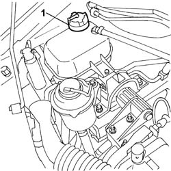
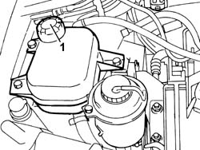
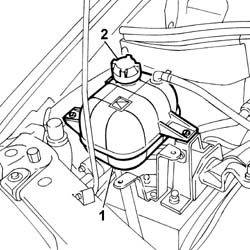
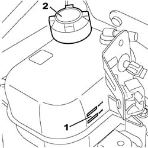

0010T21 coolant check density and top up if necessary
- Path
- Procedures > 00 MAINTENANCE > 0010 NEW VEHICLES AND MAINTENANCE > 0010T VEHICLE FLUIDS > 0010T21 coolant check density and top up if necessary
- Kind
- repair procedure (removal / refitting; the operation number is the code)
- Applies to
- engines: 1.2 8v, 1.4 8v, 1.6 16v, 1.3 JTD 16V, 1.9 DIESEL; all production periods
- Interactive page
- https://sloeber94.github.io/elrnDB-fDbl/en/#/2584123
Applies to: engines: 1.2 8v; all production periods
Check that the level of the engine coolant is between the MIN and MAX marks on the expansion reservoir.
1. If necessary, top up the level, undoing the cap and introducing engine coolant.
Type | Component | Description | Qty. | |
|---|---|---|---|---|
- | Fluid | ENGINE COOLING CIRCUIT | PARAFLU' | - |

Applies to: engines: 1.2 8v; all production periods
Fit the cap.
Start up the vehicle and let the engine idle for a few minutes.
Switch off the engine and wait for a few minutes.
Check again that the level of the engine coolant is between the MIN and MAX marks on the expansion reservoir.
Applies to: engines: 1.6 16v; all production periods
Check that the level of the engine coolant is between the MIN and MAX marks on the expansion reservoir.
1. If necessary, top up the level, undoing the cap and introducing engine coolant.
Type | Component | Description | Qty. | |
|---|---|---|---|---|
- | Fluid | ENGINE COOLING CIRCUIT | PARAFLU' | - |

Applies to: engines: 1.6 16v; all production periods
Fit the cap.
Start up the vehicle and let the engine idle for a few minutes.
Switch off the engine and wait for a few minutes.
Check again that the level of the engine coolant is between the MIN and MAX marks on the expansion reservoir.
Applies to: engines: 1.9 DIESEL; all production periods
1. Check that the level of the engine coolant is between the MIN and MAX marks on the expansion reservoir.
2. If necessary, top up the level, undoing the cap and introducing engine coolant.
Type | Component | Description | Qty. | |
|---|---|---|---|---|
- | Fluid | ENGINE COOLING CIRCUIT | PARAFLU' | - |

Applies to: engines: 1.9 DIESEL; all production periods
Fit the cap.
Start up the vehicle and let the engine idle for a few minutes.
Switch off the engine and wait for a few minutes.
Check again that the level of the engine coolant is between the MIN and MAX marks on the expansion reservoir.
Applies to: engines: 1.3 JTD 16V; all production periods
1. Check that the level of the engine coolant is between the MIN and MAX marks on the expansion tank.
2. If necessary, top up the level, undoing the cap and introducing engine coolant.
Type | Component | Description | Qty. | |
|---|---|---|---|---|
2 | Fluid | CHANGE ENGINE COOLANT | Mixture of 50% PARAFLU UP/water | 6.2 l |

Applies to: engines: 1.3 JTD 16V; all production periods
Fully tighten the cap on the engine coolant reservoir.
Start up the engine and let it idle for a few minutes.
Switch off the engine and wait for a few minutes.
Check again that the level of the engine coolant is between the MIN and MAX marks on the expansion reservoir.
Applies to: engines: 1.4 8v; production: da 12/03; only with equipment: MY 2005
1. Check that the level of the engine coolant is between the MIN and MAX marks on the expansion tank.
2. If necessary, top up the level, undoing the cap and introducing engine coolant.
Type | Component | Description | Qty. | |
|---|---|---|---|---|
2 | Fluid | CHANGE ENGINE COOLANT | Mixture of 50% PARAFLU UP/water | 7 l |
Applies to: engines: 1.4 8v; production: da 12/03; only with equipment: MY 2005
Fully tighten the cap on the engine coolant reservoir.
Start up the engine and let it idle for a few minutes.
Switch off the engine and wait for a few minutes.
Check again that the level of the engine coolant is between the MIN and MAX marks on the expansion reservoir.
Topics that link to this page (31)
- D36 ENGINE COOLANT OVERHEATING SIGNALLED BY THE INSTRUMENT / WITH VISIBLE VAPOUR VENTING
- D37 ENGINE COOLANT OVERHEATING SIGNALLED BY THE INSTRUMENT / WITHOUT VISIBLE VAPOUR VENTING
- X08 ENGINE COOLANT CONSUMPTION
- 0010K20 20,000km service coupon, emission control version
- 0010K40 40,000km service coupon, emission control versions
- 0010K60 60,000km service coupon - emission control versions
- 0010K80 80,000km service coupon - emission control versions
- 0010M01 100,000km service coupon, emission control versions
- 0010M20 120,000km service coupon, emission control versions
- 0010M21 120000 km service coupon for emission control versions with air conditioner
- 0010M40 140,000km service coupon - emission control versions
- 0010M60 160,000km service coupon - emission control versions
- 0010M80 180,000km service coupon - emission control versions
- 1004B10 POWER UNIT WITH MANUAL GEARBOX - R.R
- 1004B12 power unit with manual gearbox - r+r for versions with a/c
- 1016C10 cylinder head - r + r and replace gasket
- 1072B10 inlet manifold - r + r and replace seal
- 1084C20 radiant mass for engine oil cooling - r + r
- 1088B10 engine cooling tank - r + r
- 1088B20 engine cooling radiator - r + r
- 1088B24 engine cooling radiator - r r for air conditioned versions
- 1088B26 Engine cooling radiator AIR DUCT PROTECTION/ - R.R.
- 1088C10 water pump - r + r
- 1088C12 water pump - r+r for versions with air conditioner
- 1088C14 water pump - r + r with drive belt removed
- 1088C30 thermostat unit - r+r
- 1088D14 upper sleeve for coolant inlet to radiator - r + r
- 1088D23 sleeve from thermostat to rigid pipe carrying fluid to pump - r r
- 1088D24 rigid pipe for coolant inlet to water pump - r + r
- 1088D47 oil exchange sleeve - r r
- 1088D70 cng injection system pressure reduction unit cooling circuit pipe(1) - r r